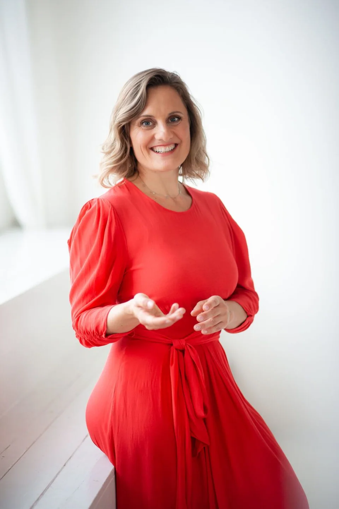
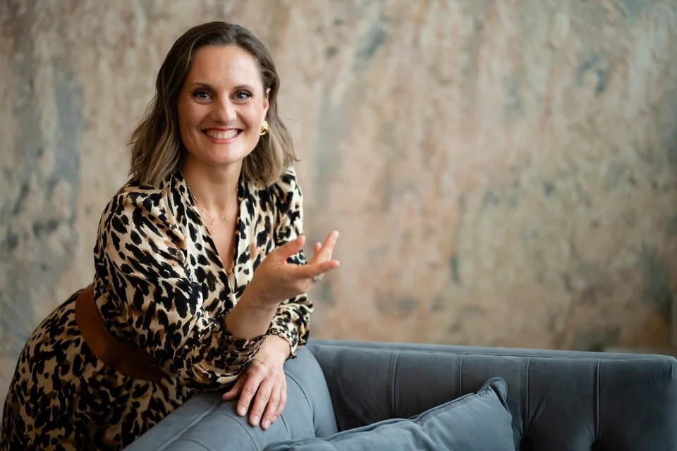
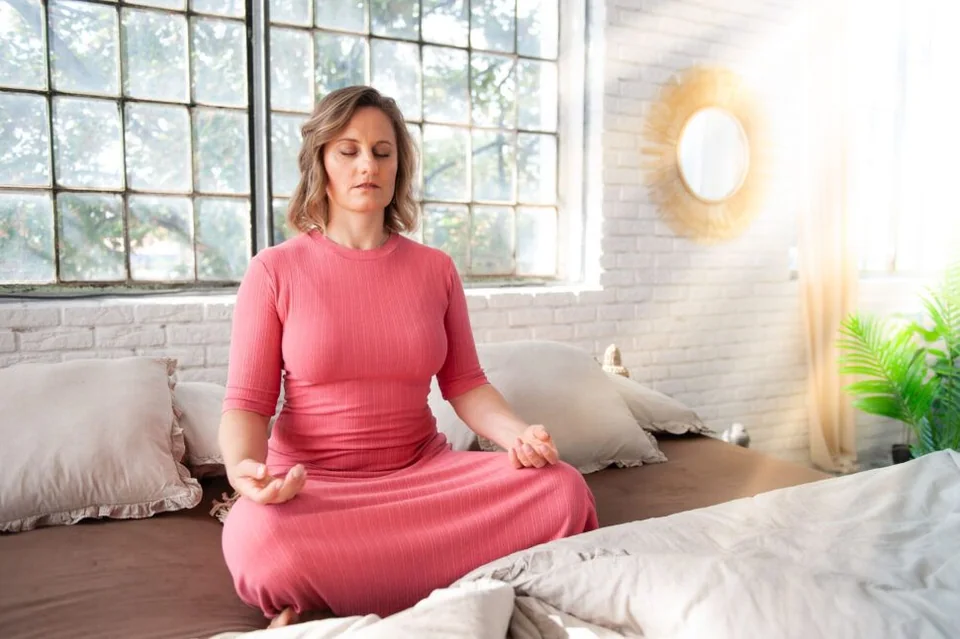
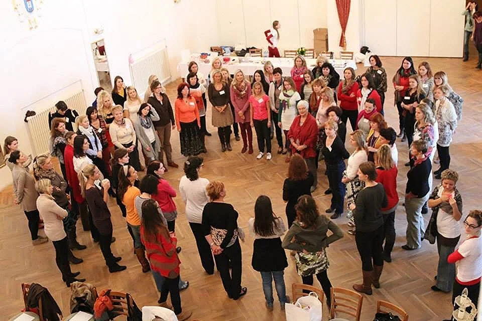

Online programVztah k sobě
Škola sebelásky
Praktický program pro laskavější vztah k sobě, sebedůvěru a vnitřní oporu.
- Sebepřijetí a respekt k sobě
- Vnitřní kritik a sebekritika
Nabídka je nyní uzavřená
Více prostoru pro vnitřní klid, ne další tlak na výkon. Pětiměsíční vzdělávací cesta s mým vedením, zaměřená na psychickou odolnost a pravidelnou praxi.

Moje práce v číslech
Kde právě jste
Nemusíte znát název kurzu.
Začněte tím, co je pro vás důležité.

Méně sebekritiky a srovnávání. Více přijetí a důvěry v sebe.
Prozkoumat téma
Když je toho hodně a hlava ani tělo nechtějí vypnout.
Prozkoumat téma
Pojmenovat své potřeby a učit se říkat ne bez výčitek.
Prozkoumat témaProstor pro vaše téma
Praktický program pro laskavější vztah k sobě, sebedůvěru a vnitřní oporu.
Nabídka je nyní uzavřená
Práce s napětím v těle a každodenními situacemi, ve kterých je toho na vás moc.
597 KčZa zvolenou nabídku
Kurz o emocích, vlastních potřebách a reakcích ve vypjatých okamžicích.
1 690 KčZa zvolenou nabídku
Pro chvíle, kdy vám snaha dělat všechno správně bere energii i radost.
597 KčZa zvolenou nabídku
Rozpoznávání manipulace a práce s hranicemi v partnerských, rodinných i pracovních vztazích.
597 KčZa zvolenou nabídku
Když chcete navázat
Ráno, večer nebo ve chvíli, kdy se potřebujete zastavit. Digitální průvodkyně pro vaše otázky a sebereflexi přes Telegram.
AI nástroj, ne osobní komunikace se mnou. Nenahrazuje lidské vedení, odbornou ani krizovou pomoc.
Ukázky a zkušenostiS Luckou do kapsy jsem mohla probrat absolutně všechny moje pocity, bez studu z hodnocení.
Podporu si vybírejte podle sebe. Samostatné služby nejsou automatickou součástí každého programu; obsah svého balíčku najdete v podmínkách přihlášení.
Vybrané zkušenosti
Díky kurzu jsem se naučila zastavit svoje automatické reakce a reagovat vědomě.
Mozek jako Buddha jsem prožila naplno a odcházela jsem z každé lekce do svého světa posílena a více ukotvena v sobě, což byl můj cíl.
dnes jsem dočetla vaši knihu a musím říct, že je pěkně srozumitelně napsaná. Velmi za ni děkuji. Jsem ráda, že ji mám, protože se budu k ní stále vracet.
Bez přihlášky. Bez závazku.
Začněte článkem, rozhovorem nebo krátkou chvílí pro sebe.
I tak může vypadat první krok.
Čtení a poslech na vaši cestu